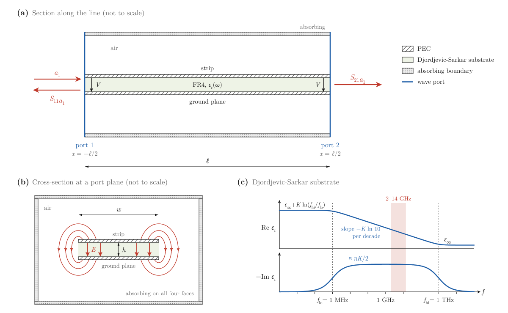
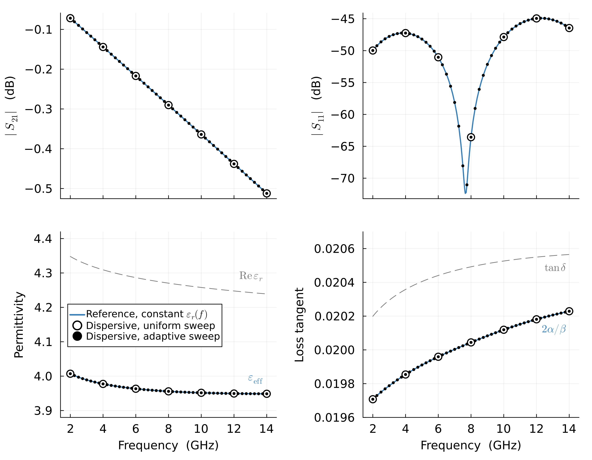

Dispersive Microstrip
The files for this example are in examples/microstrip/.
This example computes transmission and reflection along a line on a lossy FR4-like substrate whose permittivity depends on frequency. A PEC strip and a PEC ground plane, both $w = 4\text{ mm}$ wide, are separated by $h = 0.2\text{ mm}$ of dielectric, with air around the line, and wave ports terminate it at both ends, $\ell = 10\text{ mm}$ apart. Equal strip and ground widths make this a compact finite-ground model, not a microstrip over an infinite ground plane.

The two end planes of the line, $x = \pm\ell/2$, are the wave ports, and each spans the whole cross-section of the air box (panel (a) above). The four side faces of the box are first-order absorbing boundaries. The substrate does not touch them, so the absorbing condition uses air, while the mode solve of each port includes the frequency-dependent substrate. The VoltagePath of each port runs from the strip to the ground plane, which fixes the polarity of the port voltage and so the sign of $S_{21}$. Most of the electric field is in the substrate, but some of it wraps around the plate edges into the air (panel (b)).
Djordjevic-Sarkar substrate
The loss tangent of FR-4 is nearly constant over many decades of frequency. A complex permittivity that does not depend on frequency would not have a causal response in time, so Djordjevic et al. [1] replace it by a continuum of Debye relaxations whose frequencies are spread uniformly on a logarithmic scale between $f_\mathrm{lo}$ and $f_\mathrm{hi}$:
\[\varepsilon_r(s) = \varepsilon_\infty + K \log\frac{s + \omega_\mathrm{hi}}{s + \omega_\mathrm{lo}}, \qquad s = i\omega,\]
with $\omega_\mathrm{lo} = 2\pi f_\mathrm{lo}$ and $\omega_\mathrm{hi} = 2\pi f_\mathrm{hi}$. Well between the two corner frequencies $\operatorname{Re}\varepsilon_r$ falls by about $K\ln 10$ per decade and $-\operatorname{Im}\varepsilon_r$ stays close to $\pi K/2$; far above $f_\mathrm{hi}$ the permittivity approaches $\varepsilon_\infty$ and the loss goes to zero (panel (c)). A positive strength $K$ and $0 < f_\mathrm{lo} < f_\mathrm{hi}$ make the model passive. The substrate uses the additive Permittivity object, with the corner frequencies in GHz:
"Permittivity": {
"HighFrequency": 4.0,
"Terms": [{
"Type": "DjordjevicSarkar",
"Strength": 0.056,
"LowerFrequency": 1.0e-3,
"UpperFrequency": 1.0e3
}]
}So $\varepsilon_\infty = 4$, $K = 0.056$, $f_\mathrm{lo} = 1\text{ MHz}$, and $f_\mathrm{hi} = 1\text{ THz}$. Over the 2–14 GHz sweep, $\operatorname{Re}\varepsilon_r$ falls from 4.3480 to 4.2391 and the loss tangent $\tan\delta = -\operatorname{Im}\varepsilon_r/\operatorname{Re}\varepsilon_r$ rises from 0.02020 to 0.02057. These parameters illustrate FR4-like dispersion; they are not a fit to a measured laminate. For a relaxation model the stored electric energy is that of $\operatorname{Re}\varepsilon_r(\omega)$, which is what domain-E.csv reports for the substrate; this is not a general rule for Drude or Lorentz oscillators.
Mesh and inputs
The mesh coordinates are in units of 0.1 mm ("L0": 1.0e-4). The shared mesh/mesh.jl generator also serves the magnetostatic regression cases. The air beyond the two end planes has no material definition and is removed by CleanUnusedElements, so those planes become exterior wave ports. Their mesh elements are oriented outward.
| Attributes | Role in this example |
|---|---|
| Volume 1 | Air around the line |
| Volume 2 | Dispersive substrate between the plates |
| Volume 3 | Air beyond the ports, removed on loading |
| Boundary 2 | Absorbing air-box faces |
| Boundaries 3, 4 | PEC plates and the strip's terminal patch |
| Boundaries 5, 7 | Port 1 at $x=-5$ mm |
| Boundaries 6, 8 | Port 2 at $x=+5$ mm |
microstrip_driven.json sweeps 2–14 GHz in uniform steps of 2 GHz. microstrip_adaptive.json sweeps the same band with the adaptive reduced model, with tolerance $10^{-4}$ and a 0.25 GHz output step. Both use second-order shape functions, report the substrate's energy, and sample the electric and magnetic fields at its center. Run them from the example directory:
palace -np 1 microstrip_driven.json
palace -np 1 microstrip_adaptive.jsonThe outputs are in postpro/driven/ and postpro/adaptive/.
Reference
This line has no closed-form solution. The plates have equal width, so the field wraps around both edges, and neither the parallel-plate formulas nor those of a microstrip over an infinite ground plane apply. The reference is instead an independent solve of the same problem: at each frequency $f$ the line is solved again with the substrate replaced by the constant Permittivity $\operatorname{Re}\varepsilon_r(f)$ and LossTan $\tan\delta(f)$ of the model. That solve does not use the dispersive material at all. It shares the mesh and the ports, and so the discretization error, with the dispersive solve. The comparison therefore tests the frequency-dependent material: its assembly in the volume and in the port mode solve, and the adaptive sweep built on it. It does not test the convergence of the mesh.
The script microstrip.jl runs both inputs and the reference at 69 frequencies, the output frequencies of the adaptive sweep with more around the minimum of $|S_{11}|$, then prints the comparison and plots it:
julia --project=examples -e 'include("examples/microstrip/microstrip.jl"); generate_microstrip_data()'Results

Both dispersive sweeps lie on the reference. The uniform sweep agrees with it to $1.3\times10^{-8}$ in the complex S-parameters, and the adaptive sweep to $8.7\times10^{-9}$ at all of its 49 output frequencies, although it is built from only nine full-order solves, at 2, 2.455, 3.303, 5.284, 6.929, 8.709, 11.20, 13.45, and 14 GHz.
The lower plots read the line off $S_{21}$. Its phase $\phi = -\arg S_{21} + 2\pi m$, unwrapped from the lowest frequency (the script takes the branch nearest $\omega\ell\sqrt{\operatorname{Re}\varepsilon_r}/c$), gives the effective permittivity $\varepsilon_\mathrm{eff} = (c\phi/\omega\ell)^2$, and its magnitude the attenuation $\alpha = -\ln|S_{21}|/\ell$. Since part of the field is in the air, $\varepsilon_\mathrm{eff}$ is 92–93% of $\operatorname{Re}\varepsilon_r$, and it follows the dispersion of the substrate down from 4.0071 at 2 GHz to 3.9487 at 14 GHz. The loss per radian of phase, $2\alpha/\beta$ with $\beta = \phi/\ell$, is below $\tan\delta$ for the same reason. For a line whose only loss is in its dielectric, perturbation theory gives $2\alpha/\beta \approx p_e\tan\delta$, where $p_e$ is the dielectric's share of the electric energy [2]. Here $p_e$ (p_elec[1] in domain-E.csv) is 0.972 to 0.977, and $2\alpha/\beta$ exceeds $p_e\tan\delta$ by 0.2% to 0.7%, so nearly all of the power lost along the line goes into the substrate. At the frequencies of the uniform sweep, from its output:
| $f$ (GHz) | $\operatorname{Re}\varepsilon_r$ | $\tan\delta$ | $\varepsilon_\mathrm{eff}$ | $2\alpha/\beta$ | $p_e\tan\delta$ | $\lvert S_{11}\rvert$ (dB) | $\lvert S_{21}\rvert$ (dB) | $\lvert\Delta S\rvert$ |
|---|---|---|---|---|---|---|---|---|
| 2 | 4.3480 | 0.02020 | 4.0071 | 0.01971 | 0.01964 | −49.98 | −0.0718 | $6.2\times10^{-13}$ |
| 4 | 4.3092 | 0.02036 | 3.9774 | 0.01985 | 0.01981 | −47.25 | −0.1442 | $1.3\times10^{-8}$ |
| 6 | 4.2865 | 0.02044 | 3.9634 | 0.01996 | 0.01990 | −51.04 | −0.2170 | $2.2\times10^{-10}$ |
| 8 | 4.2704 | 0.02049 | 3.9558 | 0.02004 | 0.01997 | −63.57 | −0.2903 | $8.1\times10^{-11}$ |
| 10 | 4.2579 | 0.02053 | 3.9516 | 0.02012 | 0.02002 | −47.87 | −0.3640 | $3.1\times10^{-10}$ |
| 12 | 4.2477 | 0.02055 | 3.9495 | 0.02018 | 0.02006 | −44.95 | −0.4381 | $8.6\times10^{-10}$ |
| 14 | 4.2391 | 0.02057 | 3.9487 | 0.02023 | 0.02010 | −46.46 | −0.5122 | $7.2\times10^{-11}$ |
The last column is the larger of $|\Delta S_{11}|$ and $|\Delta S_{21}|$ between the uniform sweep and the reference. The reflection stays below −44.9 dB across the band. A uniform line between ports matched to its own mode does not reflect, so $|S_{11}|$ is the small mismatch between the discrete port mode and the discrete line. The reference reproduces it, including the sharp minimum near 7.7 GHz, which falls below −72 dB.
plot_microstrip() in the same script redraws the figure from the existing output, in postpro/microstrip.png. To regenerate the supplied mesh:
julia --project=.. -e 'include("mesh/mesh.jl"); generate_microstrip_mesh(filename="microstrip.msh")'References
[1] A. R. Djordjevic, R. M. Biljic, V. D. Likar-Smiljanic and T. K. Sarkar, Wideband frequency-domain characterization of FR-4 and time-domain causality, IEEE Transactions on Electromagnetic Compatibility 43 (2001) 662-667.
[2] D. M. Pozar, Microwave Engineering, Wiley, Hoboken, NJ, 2012.